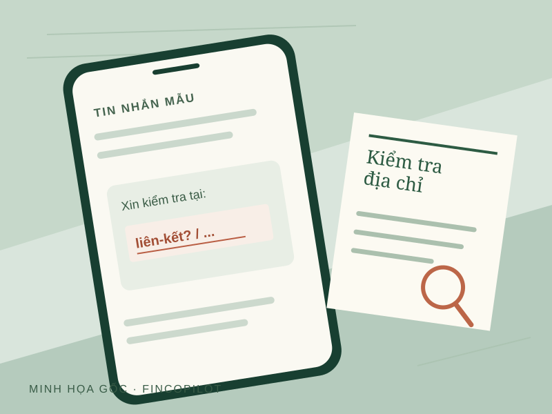
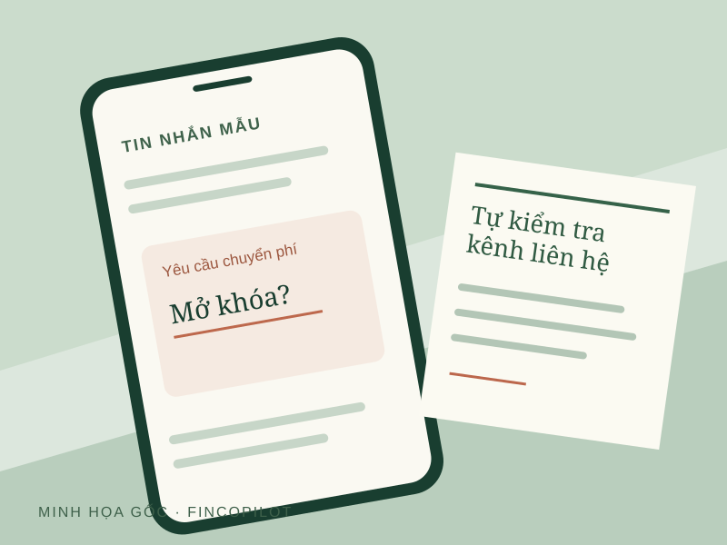

Ba nhóm thủ đoạn, bốn bối cảnh minh họa

Đường dẫn đáng ngờPhishing · tin nhắn và địa chỉ nguồnDanh tính tự nhậnMạo danh · hai hồ sơ chưa đối chiếu
Phí tài khoảnTin nhắn · chưa rõ kênh liên hệPhí trước giải ngânVay giả mạo · hai chứng từ tách biệt